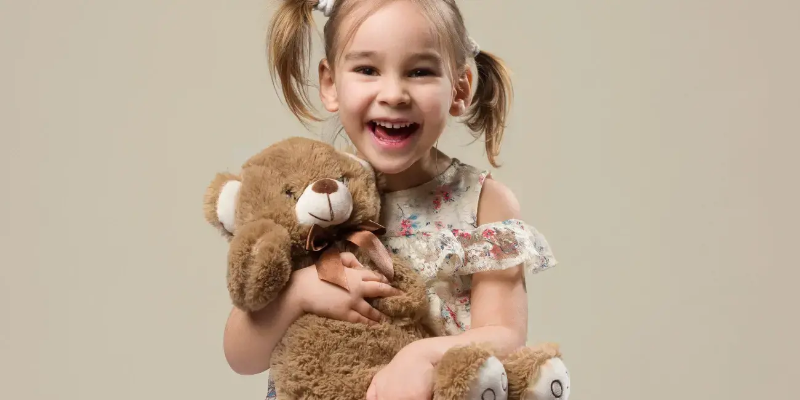

A l'occasion de la taker academy: -30% sur tout le site

Expédition dans la journée, livraison en 48h.
Vous avez 30 jours pour changer d'avis.

Un superbe paquet cadeau comme en magasin.

Nos conseillers sont à votre écoute au 01 02 03 04 05.
L'enfance est une période magique et cruciale dans la vie d'un individu, marquée par l'innocence, la curiosité et l'apprentissage constant. Au cœur de cette phase, les peluches occupent une place particulière et significative. Ces compagnons doux et câlins ne sont pas simplement des jouets, mais des partenaires qui accompagnent les enfants dans leur voyage vers la découverte du monde qui les entoure. Les peluches deviennent souvent des confidentes silencieuses, offrant confort et sécurité dans des moments d'incertitude. Elles sont témoins des rêves, des peurs et des joies qui façonnent les premières années de la vie, créant des liens émotionnels profonds et durables.
Les peluches jouent également un rôle essentiel dans le développement émotionnel des enfants. En agissant comme des substituts affectifs, ces amis en peluche offrent une source constante de réconfort et aident à apaiser les peurs nocturnes. La relation entre un enfant et sa peluche favorise le développement de compétences sociales et émotionnelles, encourageant l'empathie, la compassion et la gestion des émotions. Les peluches deviennent des alliées lors des premières expériences d'autonomie, apportant un soutien sans jugement dans le processus d'exploration du monde.
Enfin, les peluches incarnent la magie de l'enfance en évoquant des souvenirs chaleureux et nostalgiques à l'âge adulte. Ces compagnons en peluche ne sont pas simplement relégués au statut de jouets oubliés, mais restent des trésors sentimentaux qui évoquent les doux moments de l'enfance. Ainsi, l'importance des peluches dans la vie des enfants va bien au-delà du jeu ; elles sont des partenaires de croissance, des gardiennes de secrets et des témoins précieux du passage à l'âge adulte.
